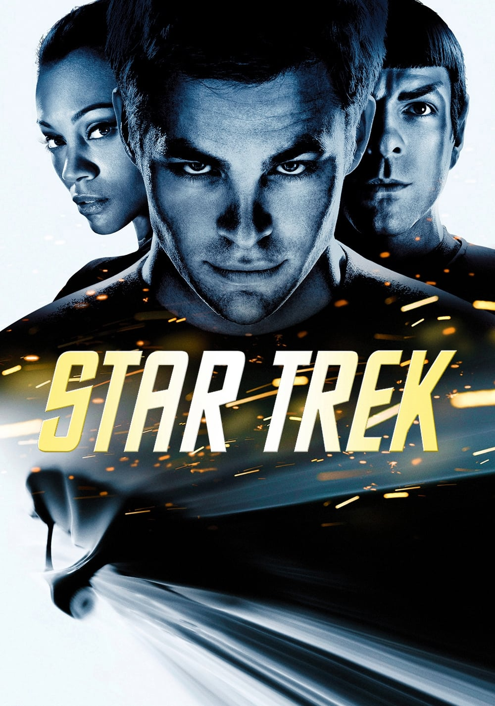
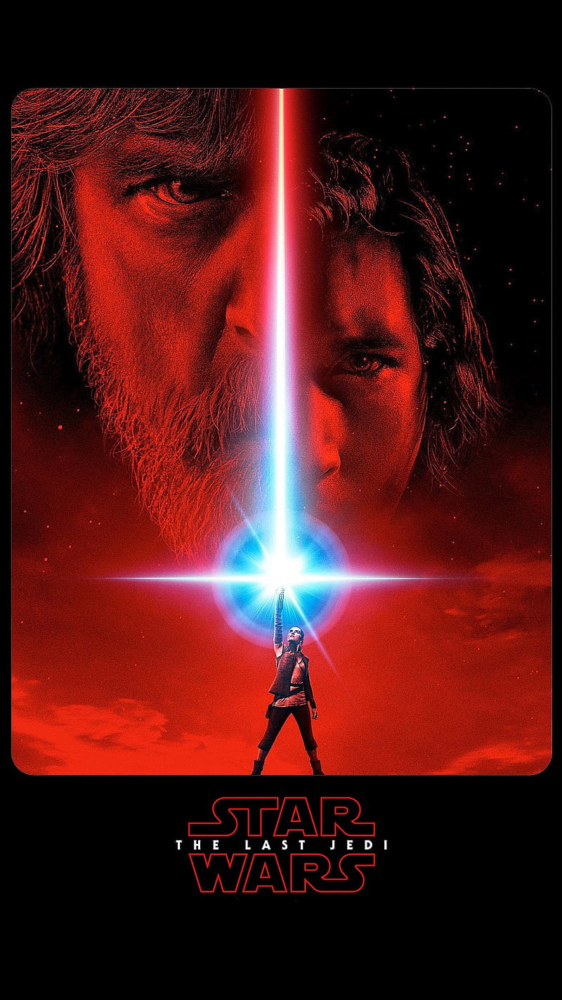
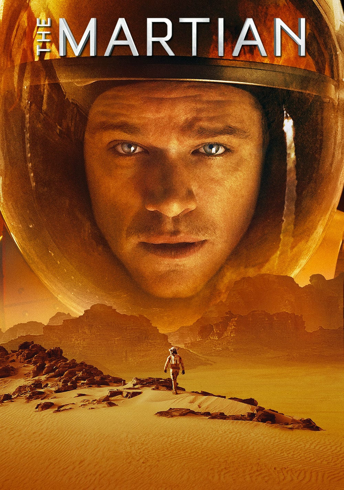
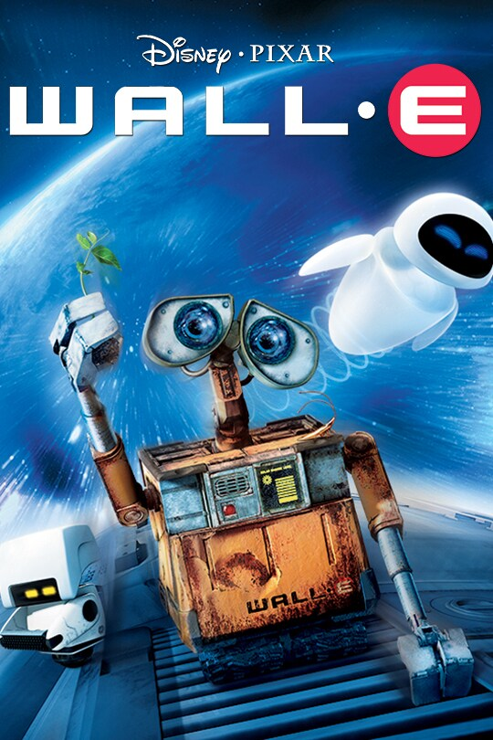
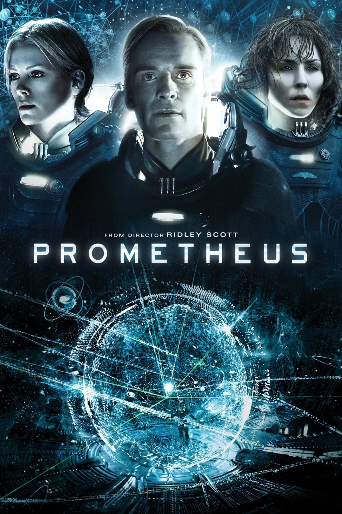
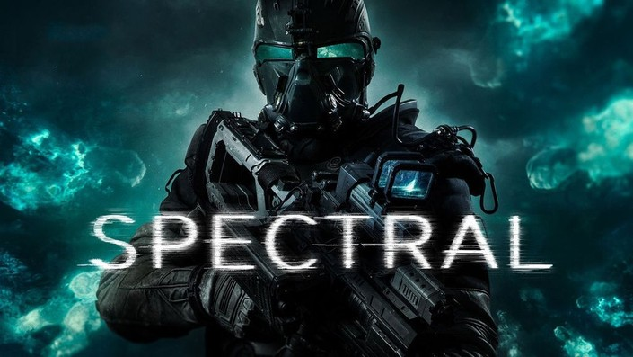
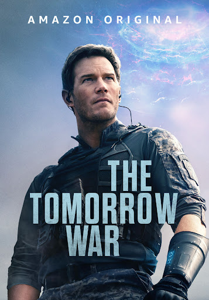
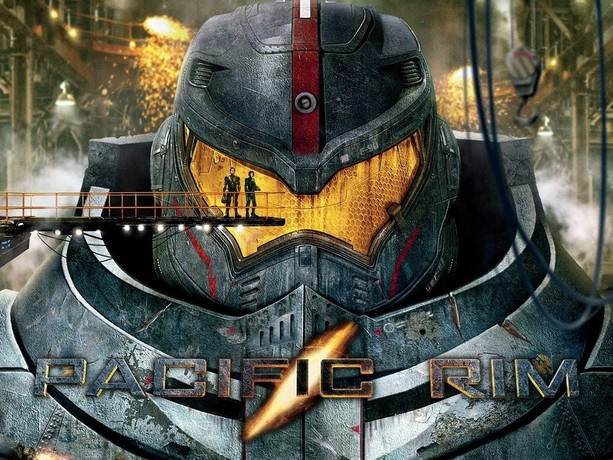
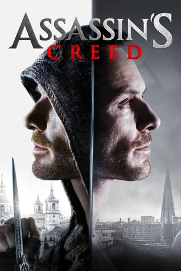

Humanity is in danger of going extinct. Cooper consents to accompany a group of people through the wormhole in the hopes of discovering a new planet where humans could live.

Star Trek is about the hope that one day, humanity will be able to rise above its small quarrels, hatred, and violence, as well as ignorance and superstition, and that we will all be able to reach for the stars in peace.

The force tries to maintain equilibrium, but when individuals see both sides, they choose one and tilt the scales until the force shifts the balance by placing people on the other side.

An astronaut was left behind on Mars and struggles to survive until the rescue arrives. Mark Watney plans on how to get off the planet using the ship and carefully managing limited fuel and reducing its weight by removing unnecessary equipment to increase its top speed to match the orbit of the rescue ship.

Humans have left Earth, which is nearly uninhabitable, covered in trash, pollution and climate change are major issues. WALL-E is the story of a lone trash-compacting robot left behind because a sandstorm damaged the other bots. Unlike the others, WALL-E seems to be sentient which may be the reason he survivves the sandstorm.

A team of scientists and explorers aboard the spaceship Prometheus, who journey to a distant planet in search of the origins of humanity. Upon arriving on the planet, the crew discovers a vast, abandoned structure and begins exploring it. However, they soon uncover terrifying secrets, including evidence that the Engineers experiments may have led to catastrophic results.

A scientist stumbled upon an invisible, mysterious, ghost-like entities or soldiers suspected using a cloaking device that appear to be invincible to conventional weapons. The scientist is developing an untested weapon that is effective in fighting these entities.

Soldiers from the future arrived in the present time to seek help recruiting soldiers and people to be sent to the future to fight in the war. Dan forester along with the other new recruits and veterans goes forward in time to uncover truths and find a way to save the future from alien invaders.

Humanity develops a giant robot called Jaegers capabale of fighting a Kaiju threat. All countries unite, work together, set all their differences aside and pour all their resources to build Jaegers as humanity's last line of defense.

Cal Lynch learns that he is descendant from a clan of Assassins who have been fighting the Templar Order for centuries. Callum is taken back to the Spanish Inquisition in the 15th century by means of a device known as the Animus, which enables him to relive the memories of his ancestor, Aguilar de Nerha.